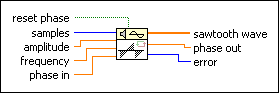
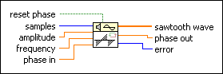
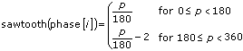
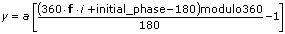

Sawtooth Wave VI
Owning Palette: Signal Generation VIs
Requires: Full Development System
Generates an array containing a sawtooth wave.

 Add to the block diagram Add to the block diagram |
 Find on the palette Find on the palette |
Owning Palette: Signal Generation VIs
Requires: Full Development System
Generates an array containing a sawtooth wave.

| Add to the block diagram |
Find on the palette |
 |
reset phase determines the initial phase of sawtooth wave. The default is TRUE. If reset phase is TRUE, LabVIEW sets the initial phase to phase in. If reset phase is FALSE, LabVIEW uses the value of phase out from when the VI last executed as the initial phase of sawtooth wave. |
 |
samples is the number of samples of the sawtooth wave. The default is 128. |
 |
amplitude is the amplitude of sawtooth wave. The default is 1.0. |
|
frequency is the frequency of sawtooth wave in normalized units of cycles/sample. The default is 1 cycle/128 samples, or 7.8125E–3 cycles/sample. |
|
phase in is the initial phase, in degrees, of sawtooth wave when reset phase is TRUE. The default is 0. |
 |
sawtooth wave is the output sawtooth wave. |
 |
phase out is the phase, in degrees, of the next sample of sawtooth wave. |
 |
error returns any error or warning from the VI. You can wire error to the Error Cluster From Error Code VI to convert the error code or warning into an error cluster. |
If the sequence Y represents sawtooth wave, the Sawtooth Wave VI generates the pattern according to the following equation.
y[i] = a*sawtooth(phase[i])
for i = 0, 1, 2, …, n – 1 and where a is amplitude and n is the number of samples.
This VI calculates sawtooth(phase[i]) using the following equation:
,
where
p = phase[i] modulo 360,
phase[i] = initial_phase + frequency*360*i,
frequency is the frequency in normalized units of cycles/sample,
initial_phase is phase in if reset phase is TRUE,
initial_phase is phase out from the previous execution of this instance of the VI if reset phase is FALSE.
The preceding equations can be represented by the following equation.

The Sawtooth Wave VI is reentrant, so you can use it to simulate a continuous acquisition from a sawtooth wave function generator. If the input control reset phase is FALSE, subsequent calls to a specific instance of the Sawtooth Wave VI produce the output sawtooth wave array containing the next samples of a sawtooth wave.
Because the Sawtooth Wave VI is a reentrant VI, when reset phase is set to FALSE, the Sawtooth Wave VI uses the phase out value as its new phase in the next time the VI executes.
Refer to the Function Generator with FM VI in the labview\examples\Signal Processing\Signal Generation directory for an example of using the Sawtooth Wave VI.
 Open example Find related examples
Open example Find related examples